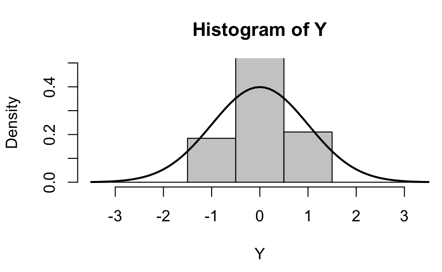

R Graphics Charts
For parts 1 and 2 of this assignment I have run line by line of each script of R code of Paul Murrell’s basic R programs from his book “R Graphics by including comments in the script of what each line of code does and some comments of some changes I made for each question that was being posed within the comments:
# Line graph plots points showing where and how the pressure
# rises when the temperature rises from 0 to infinity. The pch # is the symbol-type of the plotted data-point.
plot(pressure, pch=10)
# The placement of the text within the line graph describing
# what the graph is showing.
text(150, 600, "Pressure (mm Hg)\nversus\nTemperature (Celsius)")# Scatterplot
# Note the incremental additions
# Initializing each object with an array and list of values
x <- c(0.5, 2, 4, 8, 12, 16)
y1 <- c(1, 1.3, 1.9, 3.4, 3.9, 4.8)
y2 <- c(4, .8, .5, .45, .4, .3)
# This sets the margins of the graph and plot
par(las=1, mar=c(4, 4, 4, 4), cex=.7)
plot.new() # Completion of plotting in the curent plot and an advance to a new graphics frame
plot.window(range(x), c(0, 6)) # Sets up the world coordinate system for a graphics window
lines(x, y1) # Line showing plots for x and y1
lines(x, y2) # Line showing plots for x and y2
points(x, y1, pch=16, cex=3) # Try different cex value? I chose 3. Sets the symbol type for each plotted point on the line
points(x, y2, pch=21, bg="red", cex=2) # Different background color. I changed each plotted point's color to yellow.
par(col="gray50", fg="gray50", col.axis="gray50") # Sets color for y and x-axis.
axis(1, at=seq(0, 16, 4)) # What is the first number standing for? It is which side of the plot the axis is to be drawn on. 1=below, 2=left, 3=above, and 4=right.
axis(2, at=seq(0, 6, 2)) # 2 = y1 axis on left side
axis(4, at=seq(0, 6, 2)) # 4 = y2 axis on right side
box(bty="u") # Shape of the graph featuring an x-axis on the bottom and y-axises on the left and right side in the form of a "u."
# This inserts text to label the x-axis.
mtext("Travel Time (s)", side=1, line=2, cex=0.8)
# This inserts text to label the y-axis on the left side and I
# changed the color of the label to match which line is being
# shown that represents the data points for this label
mtext("Responses per Travel", side=2, line=2, las=0, cex=0.8, col="black")
# This inserts text to label the y-axis on the right side and I
# changed the color of the label to match which line is being
# shown that represents the data points for this label
mtext("Responses per Second", side=4, line=2, las=0, cex=0.8, col="red")
# This inserts text within the graph to show that a specific is bird number 131.
text(4, 5, "Bird 131")
# This sets the margins around the graph as it fits the screen and makes the lines of x-axis and y-axis black.
par(mar=c(5.1, 4.1, 4.1, 2.1), col="black", fg="black", col.axis="black")# Histogram
# Generates 50 random numbers
Y <- rnorm(50)
# Make sure no Y value limit on the x-axis exceeds [-3.5, 3.5]
Y[Y < -1 | Y > 1] <- NA # Selection/set range. I chose -1 and 1
x <- seq(-3.5, 3.5, .1) # This sets the spacing of the tick marks along the x-axis
dn <- dnorm(x) # This establishes the numbers for a bell curve line along the
# x-axis to be saved in the dn object
par(mar=c(4.5, 4.1, 3.1, 0)) # This sets the margins of the graph
hist(Y, breaks=seq(-3.5, 3.5), ylim=c(0, 0.5),
col="gray80", freq=FALSE) # This establishes the range of the x- and
# y-axis and colors the histogram bars gray
# This creates a normal bell curve line across the x-axis.
lines(x, dnorm(x), lwd=2)
# This sets the margins of that bell curve line within the graph
par(mar=c(5.1, 4.1, 4.1, 2.1))
# Boxplot
# This establishes the margins of the graph
# I changed the bottom margin to push the x-axis up so that the label
# can be visible
par(mar=c(4, 4.1, 2, 1))
# This is the boxplot function and it inserts the white boxes of data
boxplot(len ~ dose, data = ToothGrowth,
boxwex = 0.25, at = 1:3 - 0.2,
subset= supp == "VC", col="white",
xlab="",
ylab="tooth length", ylim=c(0,35))
# This label what the x-axis represents
mtext("Vitamin C dose (mg)", side=1, line=2.5, cex=0.8)
# This is the boxplot function and it inserts the gray boxes of data
boxplot(len ~ dose, data = ToothGrowth, add = TRUE,
boxwex = 0.25, at = 1:3 + 0.2,
subset= supp == "OJ")
# This inserts text within the graph to show that the white boxes represent
# ascorbic acid and that the gray boxes represent orange juice
legend(1.5, 9, c("Ascorbic acid", "Orange juice"),
fill = c("white", "gray"),
bty="n")
# This establishes the margins of something.
par(mar=c(5.1, 4.1, 4.1, 2.1))# Persp
# Sets the range of the x-axis
x <- seq(-10, 10, length= 30)
# The range of the y-axis is the same as the x-axis
y <- x
# I am not sure what this does
f <- function(x,y) { r <- sqrt(x^2+y^2); 10 * sin(r)/r }
# I think this sets the height range of the z axis
z <- outer(x, y, f)
# I am not sure what this does
z[is.na(z)] <- 1
# 0.5 to include z axis label
# I changed the bottom margin of the graph to 1 to push it up for better viewing
par(mar=c(1, 0.5, 0, 0), lwd=0.5)
# This is persp function that creates the 3D graphic inside the box
persp(x, y, z, theta = 30, phi = 30,
expand = 0.5)
# This sets the margins for something
par(mar=c(5.1, 4.1, 4.1, 2.1), lwd=1)# This is a piechart.
# The parameters for the margins, mar, on bottom, left, top, right. The xpd is to read data from a dataframe it is set to false to not do anything. The cex is to determine the line thickness of text and symbols for readability.
par(mar=c(0, 2, 1, 2), xpd=FALSE, cex=0.5)
# The proportion for each pie slice within the circle each, altogether, adding up to 1.
pie.sales <- c(0.12, 0.3, 0.26, 0.16, 0.04, 0.12)
# Each pie-flavor name placement in each order corresponds in respect to the order placement of each number in the list of the pie.sales object.
names(pie.sales) <- c("Blueberry", "Cherry",
"Apple", "Boston Cream", "Other", "Vanilla")
# This helps color in the pie slice with different shades of the grayscale from the start of the gamma ray of the gray color range to the end of it that you want and there are 6 items in the pie.sales object.
pie(pie.sales, col = gray(seq(0.3,1.0,length=6)))
For part 3 of this assignment, I plotted some of the following functions using data from a data set called “Happy Planet Index” at http://happyplanetindex.org:
- par()
- lines()
- points()
- axis()
- box()
- text()
- mtext()
- hist()
- boxplot()
- legend()
- persp()
- names()
- pie()
x <- c(1, 2, 3)
y1 <- c(55.8, 62.3, 55.0)
y2 <- c(77.4, 83, 74.8)
country <- c("Colombia", "Switzerland", "Ecuador")
plot.new()
plot.window(xlim = c(0, 4), ylim = c(0, 90)) # Do I need to ensure strings and characters are accepted?
lines(x, y1)
lines(x, y2)
points(x, y1, pch=21, bg= "green4", cex=2) # Try different cex value?
points(x, y2, pch=21, bg="red", cex=2) # Different background color
par(mar=c(4, 4, 3, 3.5), col="gray50", fg="gray50", col.axis="gray50", cex="0.8")
axis(1, at = x, labels = country, las = 1)# What is the first number standing for?
axis(2, at=seq(0, 90, 10))
axis(4, at=seq(0, 90, 10))
box(bty="u")
mtext("Countries", side=1, line=2, cex=1, col="black")
mtext("Happy Planet Index", side=2, line=2, las=0, cex=1, col="green4")
mtext("Life Expectancy", side=4, line=2, las=0, cex=1, col="red")